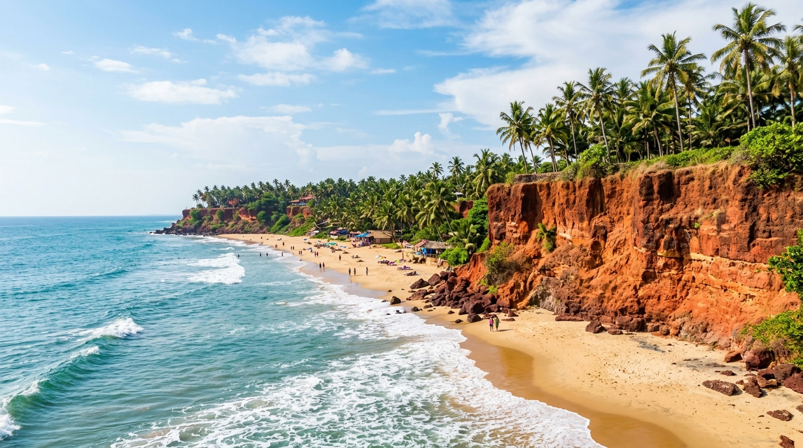
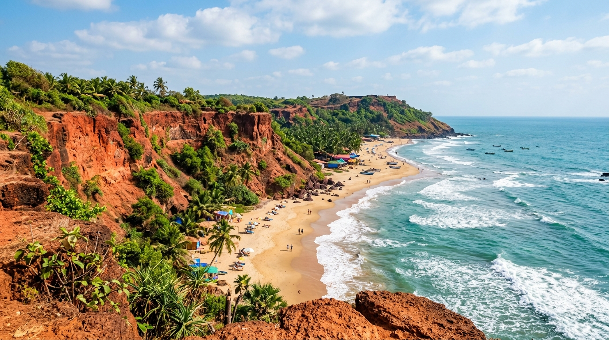
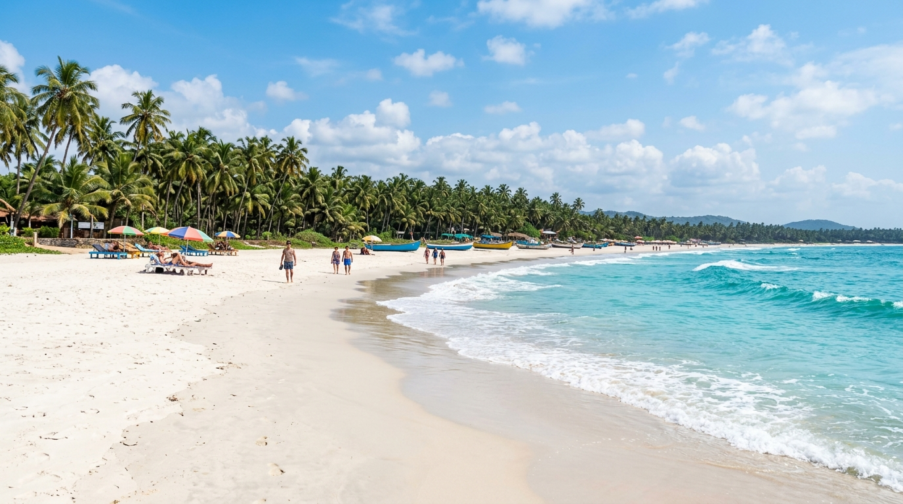

Marina Beach, Tamil Nadu
India's longest natural urban beach.
Discover the 7,500 km maritime heritage spanning the Arabian Sea, the Bay of Bengal, and the Indian Ocean.

From the bustling shores of Chennai to the pristine white sands of the Andamans.
India's longest natural urban beach.

Consistently ranked among Asia's best beaches.

Famous for its vibrant nightlife and water sports.

Red laterite cliffs, Papanasam sacred waters, Janardanaswamy Temple & surfing.

Protected Olive Ridley sea turtle sanctuary & pristine golden sands.

Dramatic red laterite cliffs, Chapora Fort overlook & sunset culture.

Powdery white sands, water sports, Church of Our Lady of Mercy & shacks.

Golden sands, water sports, seafood shacks & the legendary nightlife of Tito's Lane.

Shallow coral lagoon, safe swimming & glass-bottom boat rides in the Andamans.

Golden sand dunes, 17th-century Fort Aguada, water sports & seaside shacks.

Hippie paradise — rocky shoreline, legendary flea market, Chapora Fort & trance music heritage.

The 'Queen of Beaches' — golden sands, water sports, bustling markets & St. Alex Church.

Crescent bay, Canacona Island, shallow waters & the famous Silent Noise disco.


Despite their ecological and economic value, India's coasts face severe threats from climate change, rising sea levels, coastal erosion, and marine pollution. Efforts are underway to establish Marine Protected Areas (MPAs) and promote sustainable coastal tourism to protect these fragile environments for future generations.